HTTP Request dan Integrasi API pada ResepKu
Laporan praktikum · REST API, JSON, FutureBuilder, loading/error state, dan POST
Identitas Praktikum
| Mata Kuliah | Praktikum Aplikasi Mobile (DIF61145) |
|---|---|
| Modul | Praktikum 8 — HTTP Request dan Integrasi API |
| Materi | Future, async/await, JSON, REST API, FutureBuilder, request GET dan POST |
| Sub-CPMK | CPMK-45.02 — menggunakan Future, async/await, FutureBuilder; melakukan request REST API; memetakan JSON serta menangani loading dan error |
| Nama / NIM | Putri Balqis Afradinata / 2411531009 |
| Project | ResepKu — aplikasi Flutter praktikum |
I. Tujuan Praktikum
Modul ini mengganti enam data resep lokal dengan data dari https://dummyjson.com/recipes, memetakan respons JSON menjadi objek Recipe, lalu menangani kondisi pemuatan, kegagalan jaringan, refresh, dan pengiriman resep baru.
- Membaca struktur JSON dan mengimplementasikan
Recipe.fromJson. - Mengambil resep melalui service HTTP dan memisahkan komunikasi jaringan dari widget.
- Menampilkan loading, error, tombol coba lagi, serta pull-to-refresh menggunakan
FutureBuilder. - Mengirim resep baru melalui POST dan menampilkan respons server kepada pengguna.
II. Dasar Teori
2.1 Future dan async/await
Future<T> mewakili nilai yang tersedia kemudian. Fungsi async dapat menunggu operasi asinkron dengan await; kegagalan jaringan diteruskan sebagai error Future.
2.2 REST API, HTTP, dan JSON
REST API menyediakan sumber daya melalui endpoint HTTP. GET membaca resep; POST mengirim data. JSON hasil respons diubah menjadi objek aplikasi dengan jsonDecode dan factory fromJson. Status HTTP di luar rentang 2xx ditangani sebagai error.
2.3 FutureBuilder dan state antarmuka
FutureBuilder membangun antarmuka sesuai status Future. ResepKu menampilkan indikator saat data belum tersedia, pesan dan tombol coba lagi ketika request gagal, serta daftar setelah data diterima. Future disimpan dan dibuat ulang saat refresh, bukan dibuat di setiap pemanggilan build().
2.4 Provider dan pemisahan tanggung jawab
RecipeService didaftarkan sebagai Provider biasa karena tidak menyimpan state tampilan. HomePage meminta service melalui context.read; provider favorit dan pengaturan tetap menjalankan tugas masing-masing.
2.5 Batasan DummyJSON
Endpoint POST/PUT/DELETE DummyJSON menyimulasikan perubahan dan tidak menyimpan perubahan secara permanen. Respons sukses tidak berarti resep baru akan tetap ada setelah daftar dimuat ulang.
III. Alat dan Bahan
- Flutter SDK dan Visual Studio Code/Android Studio.
- Project ResepKu yang telah berisi Provider, model, halaman resep, serta footer identitas.
- Android emulator atau HP Android dengan akses internet.
- Package
httpdan endpoint latihan DummyJSON.
Project praktikum: aplikasi ResepKu berbasis Flutter pada folder Praktikum 6.
IV. Langkah-Langkah Praktikum
Bagian A · API dan Model JSON4.1 Langkah A.1 — Membaca respons API
Endpoint yang dipakai modul adalah https://dummyjson.com/recipes?limit=2. Respons terdiri atas objek luar dengan key recipes (array), total, skip, dan limit. Setiap objek resep memuat nama, waktu persiapan/masak, cuisine, rating, ingredients, instructions, dan gambar. Dibanding model awal Modul 7, contoh key baru yang relevan antara lain difficulty, prepTimeMinutes, dan instructions; rating bertipe numerik sehingga aman dibaca sebagai num lalu dikonversi ke double.
| Pertanyaan | Jawaban |
|---|---|
| Nilai total | 50 (endpoint resep DummyJSON; batas hasil yang dipakai praktikum) |
| Key yang berisi daftar resep | recipes (array) |
| Tipe rating resep pertama | Angka JSON; decoder mengembalikannya sebagai num dan model mengubahnya menjadi double |
| Tiga key baru dibanding model ringkas sebelumnya | difficulty, prepTimeMinutes, instructions |
4.2 Langkah A.2 — Memasang package HTTP
Package http ditambahkan melalui flutter pub add http. Dependensi tersebut sudah tercatat pada pubspec.yaml project.
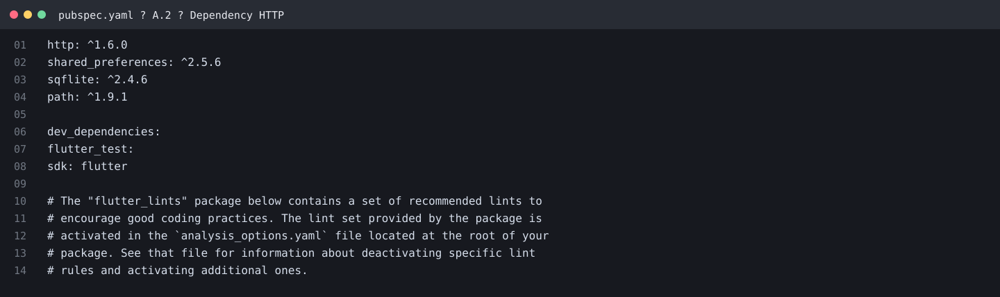
4.3 Langkah A.3 — Model Recipe.fromJson
Model memetakan properti resep dari Map JSON. Nilai opsional diberi nilai bawaan. Rating dibaca sebagai num agar respons integer maupun desimal dapat diproses, dan daftar ingredients/instructions diubah menjadi List<String>.
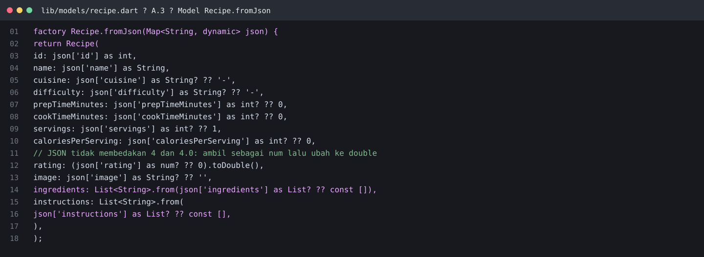
4.4 Langkah A.4 — Menghapus data dummy
Daftar HomePage saat ini mengambil data melalui RecipeService.fetchRecipes(); project tidak lagi memakai dummy_recipes.dart. Data resep bukan lagi konstanta lokal.
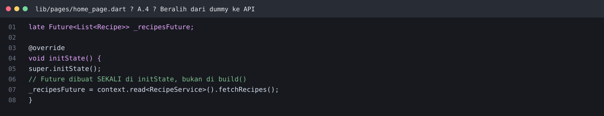
Bagian B · RecipeService dan FutureBuilder
4.5 Langkah B.1 — Membuat RecipeService
Service menyatukan GET, decoding JSON, pengecekan status, dan batas waktu 10 detik. fetchRecipes() mengembalikan daftar Recipe yang dikonversi lewat factory model.
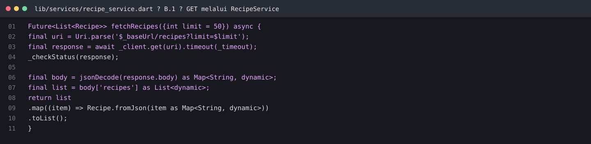
4.6 Langkah B.2 — Mendaftarkan service sebagai Provider
RecipeService disediakan melalui Provider biasa di MultiProvider. Callback dispose menutup client HTTP saat provider dilepas.
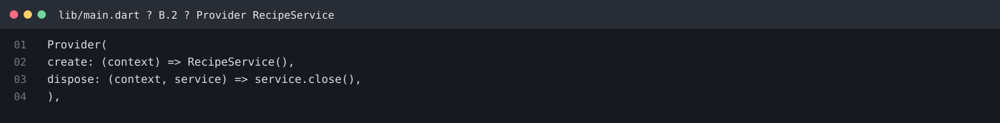
4.7 Langkah B.3 — Widget ErrorView
Widget ErrorView menampilkan ikon koneksi, pesan kegagalan, dan tombol Coba lagi. Callback retry diteruskan dari halaman yang menggunakan widget tersebut.
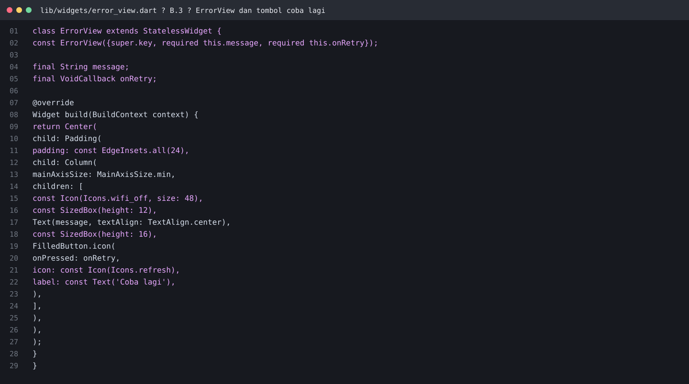
4.8 Langkah B.4 — FutureBuilder di HomePage
Future disiapkan saat initState. Builder menangani loading, error, daftar kosong, lalu data resep. Data cuisine dan list/grid dihitung dari hasil yang datang dari server.
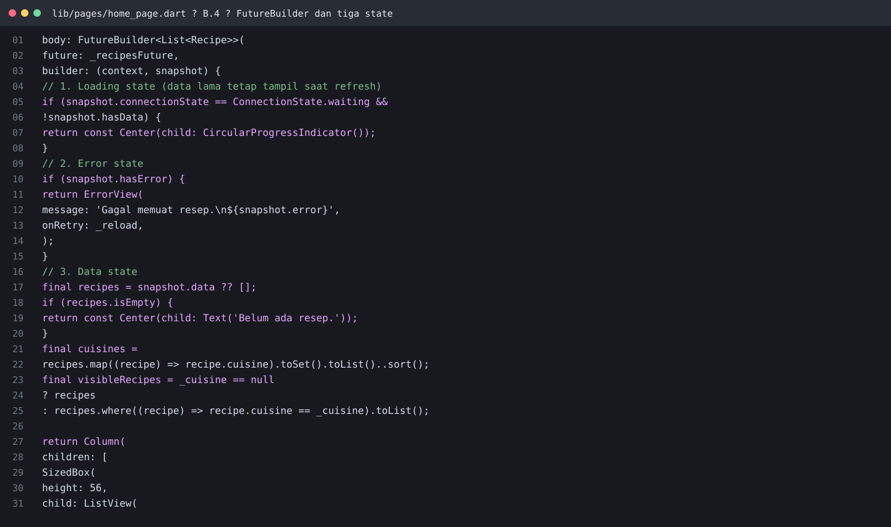
4.9 Langkah B.5 — Langkah memasak pada halaman detail
DetailPage menggunakan sliver untuk daftar bahan dan langkah memasak. Langkah hanya ditampilkan jika daftar instructions tidak kosong.
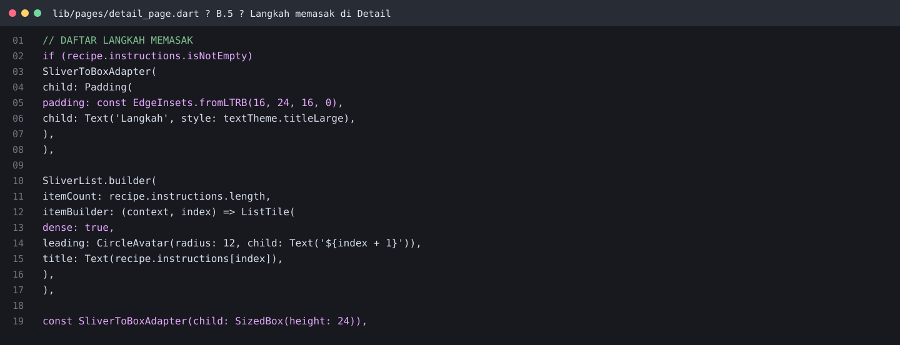
4.10 Langkah B.6 — Menguji error state dan refresh
Modul meminta mode pesawat untuk memunculkan ErrorView, lalu mencoba lagi setelah koneksi pulih. Pull-to-refresh membuat Future baru. Bukti visual ErrorView dan indikator refresh direkam langsung dari emulator.
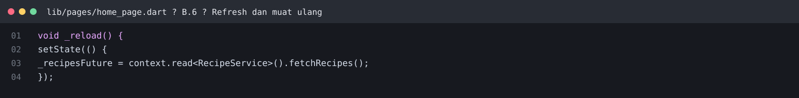
Checkpoint 1 — Data dari server
Bukti berikut menampilkan daftar hasil GET dan Detail yang memperlihatkan bagian Langkah. Footer identitas terlihat pada kedua layar.
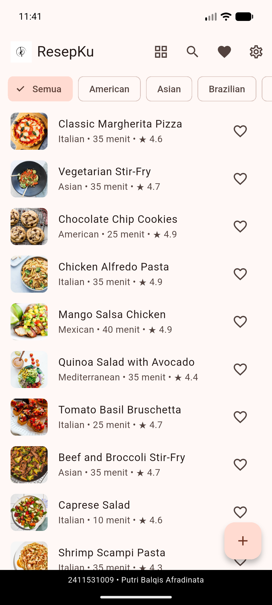
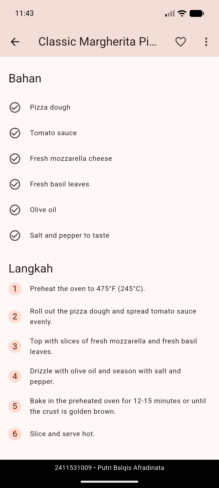
Checkpoint 2 — Error state dan refresh
Saat jaringan dimatikan, aplikasi menampilkan ErrorView. Saat request ulang berlangsung, indikator refresh terlihat. Footer identitas tampak di layar.
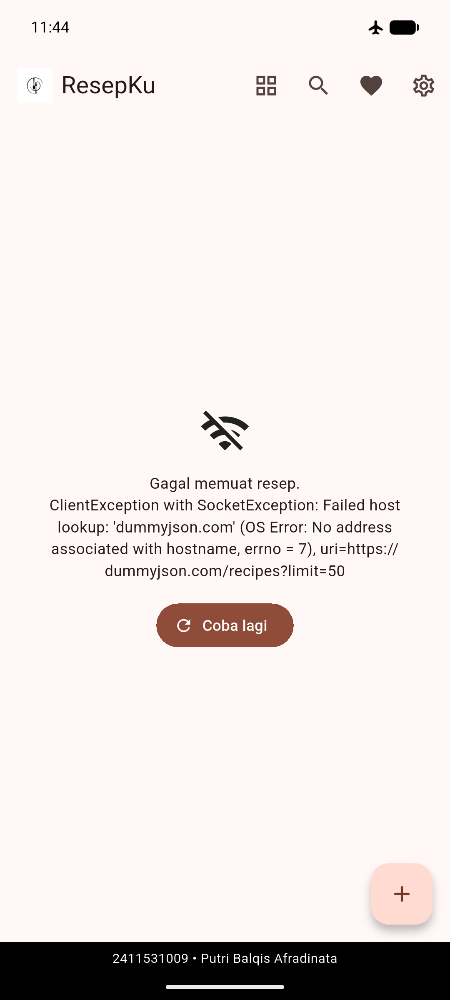
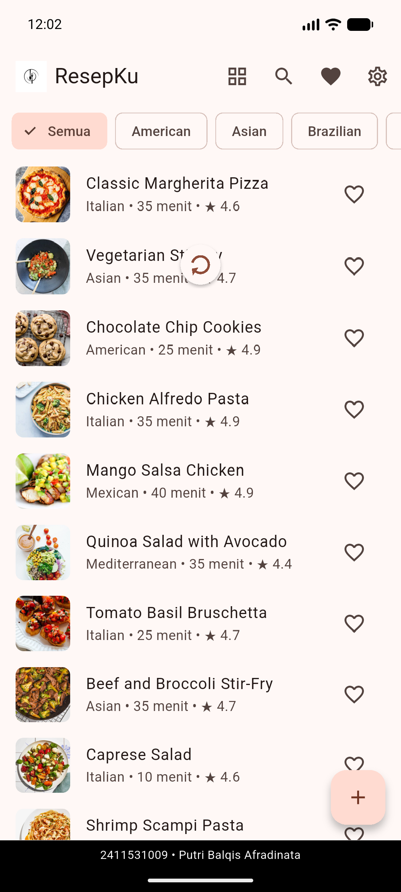
Bagian C · Mengirim resep (POST)
4.11 Langkah C.1 — Method addRecipe
Method menyiapkan body JSON, mengirim POST ke /recipes/add, mengecek status, lalu memetakan respons menjadi Recipe. Modul menjelaskan bahwa penambahan di DummyJSON bersifat simulasi.
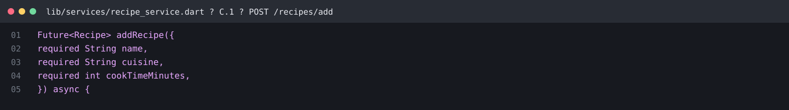
4.12 Langkah C.2 — Form AddRecipePage
Form memvalidasi nama, cuisine, dan waktu masak positif. Saat request berjalan tombol dinonaktifkan dan menampilkan indikator; saat gagal, pesan error ditampilkan.
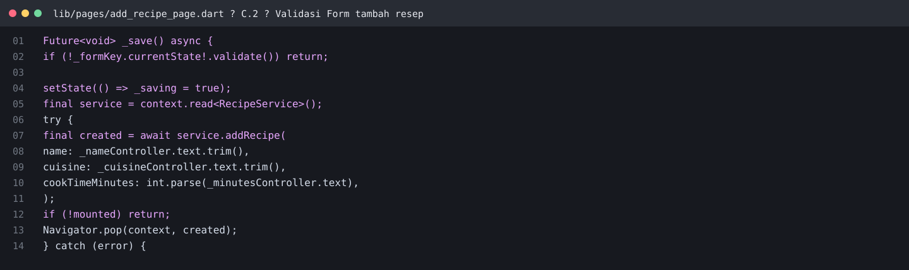
4.13 Langkah C.3 — Tombol tambah di HomePage
FloatingActionButton membuka halaman tambah. Setelah respons diterima, SnackBar menampilkan nama resep dan id dari server serta mengingatkan bahwa penyimpanan hanya simulasi.
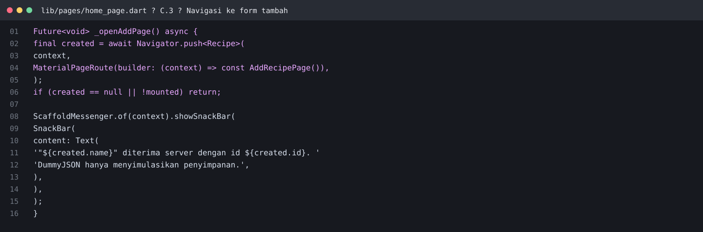
4.14 Langkah C.4 — Mencoba POST
Pengujian modul: buka form, isi tiga field valid, tekan Simpan, lalu amati SnackBar dengan id baru. Uji juga validasi field kosong dan nilai waktu yang tidak valid.
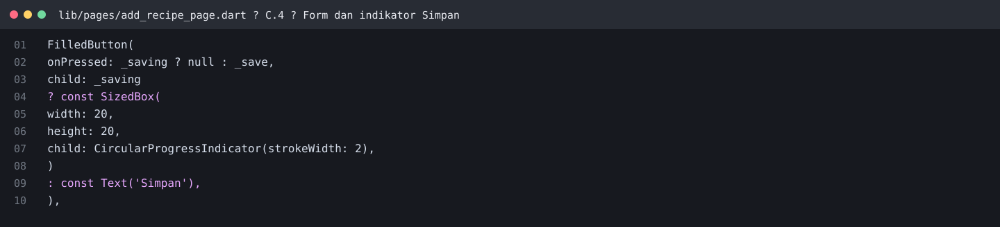
Checkpoint 3 — POST
Form tambah resep dan hasil validasinya ditampilkan berikut ini. Field nama, cuisine, dan waktu memasak menunjukkan pesan validasi saat masih kosong.
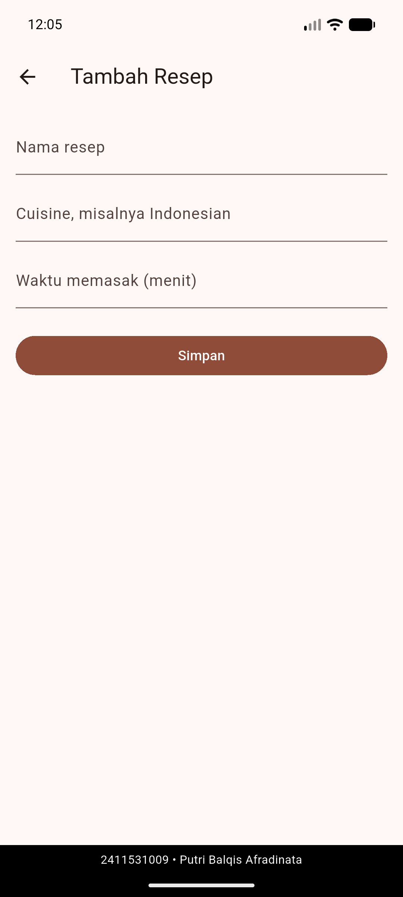
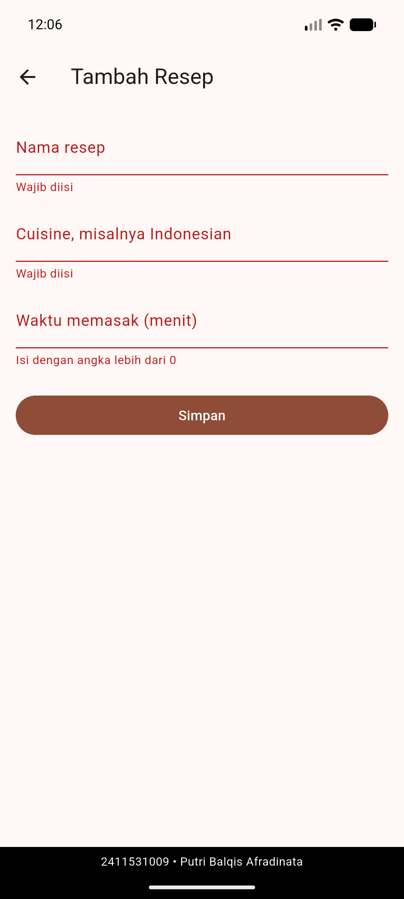
Bagian D · Pengujian aplikasi
4.15 Langkah D.1 — Skenario uji
Tabel berikut merangkum skenario pengujian pada modul beserta bukti runtime yang tersedia.
| No. | Skenario | Perilaku yang diharapkan/terlihat pada implementasi | Bukti runtime |
|---|---|---|---|
| 1 | Home dibuka | Loading lalu daftar resep API | Checkpoint 1 (daftar berhasil tampil) |
| 2 | Jaringan mati lalu restart | ErrorView dan tombol Coba lagi | Checkpoint 2 (ErrorView) |
| 3 | Tekan Coba lagi | Request GET baru dan data tampil saat jaringan pulih | Pemulihan jaringan tidak ditampilkan di gambar ini |
| 4 | Pull-to-refresh | Future diganti dan daftar dimuat ulang | Checkpoint 2 (indikator refresh) |
| 5 | Buka detail resep | Informasi, bahan, dan instructions ditampilkan | Checkpoint 1 (Detail dan Langkah) |
| 6 | Kirim resep valid | Respons POST menghasilkan id dan SnackBar | Belum terekam |
| 7 | Kirim form tidak valid | Validator mencegah pengiriman | Checkpoint 3 (validasi field kosong) |
V. Latihan
Latihan 1 · Pencarian resepSearchPage menyimpan Future hasil pencarian, mengirim query melalui RecipeService, dan memakai FutureBuilder. Ia menangani loading, error dengan tombol ulang, hasil kosong, dan daftar hasil. Screenshot emulator menampilkan hasil query "pizza" beserta footer identitas.
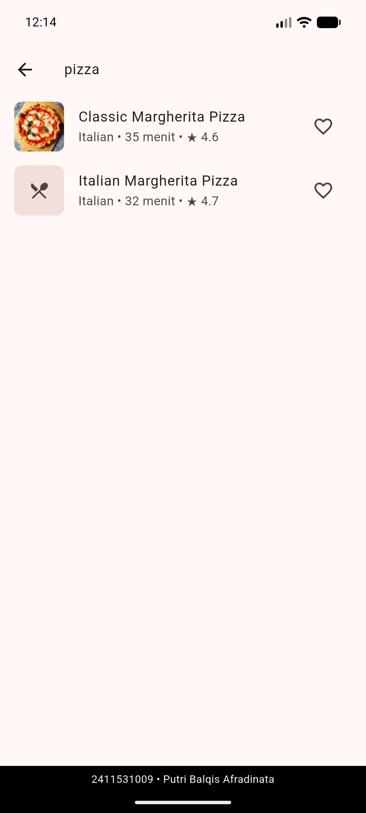
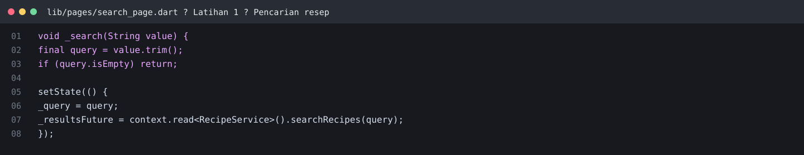
DetailPage menyediakan aksi ubah nama dengan dialog konfirmasi dan request PUT. Aksi hapus meminta konfirmasi sebelum DELETE, lalu menampilkan hasil server dan menyesuaikan daftar favorit bila perlu. Perubahan DummyJSON disimulasikan dan tidak persisten. Screenshot menampilkan dialog ubah nama dan konfirmasi hapus sebelum tindakan dilakukan. Respons akhir PUT/DELETE tidak ditampilkan pada laporan ini.
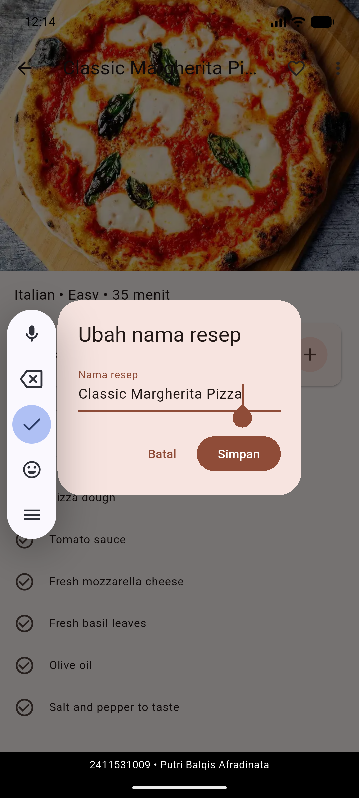
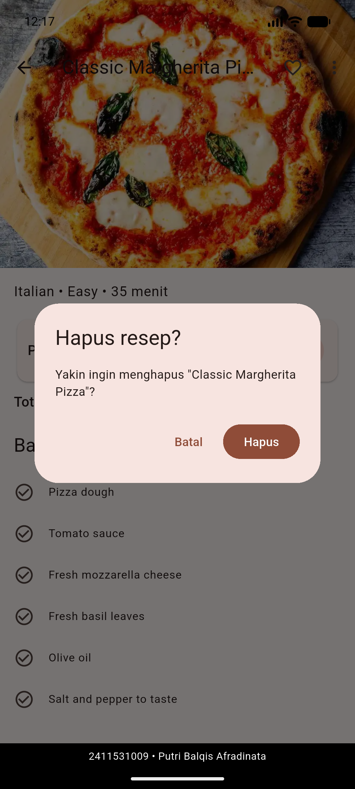
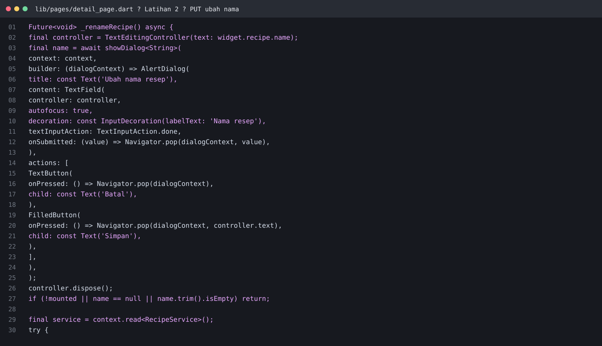
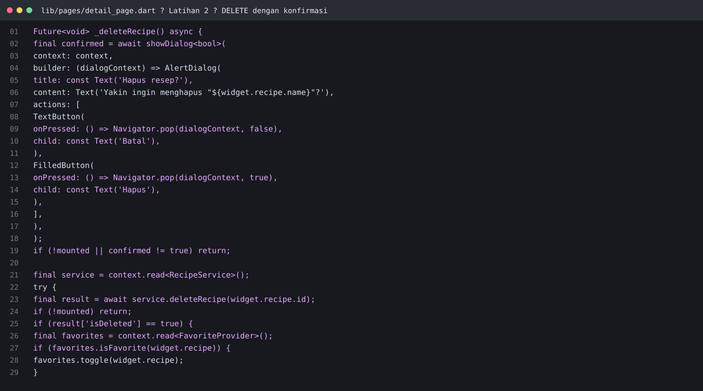
Project memakai MockClient pada fixture untuk pengujian widget tanpa internet. Namun tidak ditemukan berkas unit test khusus untuk RecipeService, jadi bagian bonus pengujian service belum diklaim selesai.
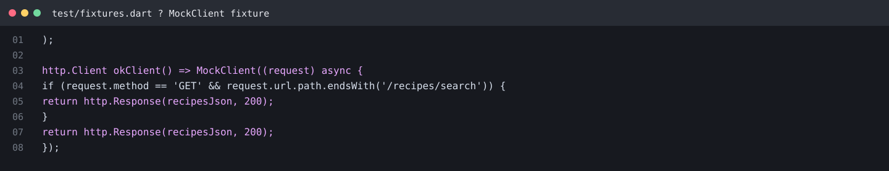
VI. Pertanyaan Analisis
1. Mengapa Future tidak dibuat langsung dalam build()?
Karena build dapat dipanggil berkali-kali akibat perubahan state. Jika setiap build membuat Future baru, request dapat terus berulang. Menyimpan Future pada state memastikan request dibuat saat inisialisasi dan hanya diganti saat retry atau refresh.
2. Mengapa rating dikonversi dari num ke double?
Nilai JSON yang secara matematis bulat dapat didecode sebagai int. Cast langsung ke double dapat gagal. Tipe num menerima keduanya lalu toDouble() memberi tipe konsisten untuk model.
3. Apa fungsi timeout dan pemeriksaan status?
Timeout membatasi waktu tunggu agar request yang tidak mendapat respons tidak menggantung tanpa batas. Pemeriksaan status mengubah respons non-2xx menjadi exception yang dapat ditangani sebagai error oleh FutureBuilder.
4. Mengapa UI memanggil RecipeService, bukan http secara langsung?
Pemisahan service membuat tanggung jawab jaringan dan tampilan lebih jelas, memungkinkan service dipakai dari beberapa halaman dan memudahkan penggantian client dengan MockClient saat unit test.
5. Mengapa resep POST tidak muncul setelah daftar dimuat ulang?
DummyJSON menyimulasikan respons POST dan memberi id, tetapi tidak menyimpan perubahan pada basis data permanen. Karena itu respons berhasil tidak menjamin data tersedia pada GET berikutnya.
VII. Kesimpulan
Pada praktikum ini, aplikasi ResepKu memetakan respons REST API ke model Recipe, mengambil data melalui RecipeService, dan menampilkan status request menggunakan FutureBuilder. Aplikasi juga menyediakan error dan retry, pull-to-refresh, pencarian resep, serta form POST. DummyJSON menyimulasikan perubahan data sehingga hasil mutasi tidak tersimpan secara permanen.
Screenshot hasil praktikum disertakan pada bagian checkpoint dan latihan.